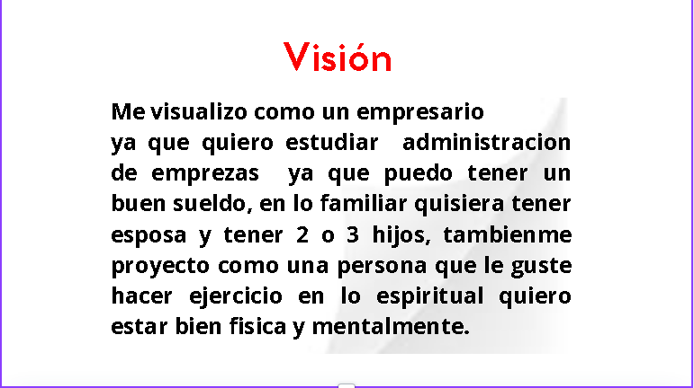

Mi pasaporte a la vida
Walter de la cruz
Grado: 5to baco "A"
Prof:Ronal
"Una historia no comienza en el primer capitulo"
Descripción Personal
Soy una persona de apariencia ceria pero que puede llegar a ser amigable ,soy una persona que no suele tener muchas amistades,soy una perosna que le gusta progresar en lo que se dedica.
"En realidad lo hace cuando un problema aparece"
Biografia
Visión
Tu visión a largo plazo sobre tu vida, metas y sueños.
Misión
Lo que consideras tu propósito o misión en la vida.
Metas
Metas que te has propuesto lograr en tu vida a corto, mediano y largo plazo.

Aliados
Las personas, organizaciones o grupos que te apoyan en tu camino.
FODA
Realiza un análisis FODA (Fortalezas, Oportunidades, Debilidades, Amenazas) sobre tu vida.
Estrategias
Las estrategias que usarás para alcanzar tus metas y superar desafíos.
Conclusión
Que Dios nos da una vida y mientras nos deje estar viviendo devemos intentar ser mejores y cumplir nuestras metas y objetivos, porque cuando nos tengamos que ir vamos a querer aver hecho lo que no hicimos
Agradecimientos
Primeramente agradezco a Diós por darme la oportunida de estar con mi familia y que ellos se encuentren bien , tambien quiero agradecer a mis padres por darme unos valores, darme los estudios hasta el nivel que llevo ,tambien quiero agradecer al colegio Liceo Compu-Market por darme una educacion ,gracias a los profesoresque pone a nuestra disposición.